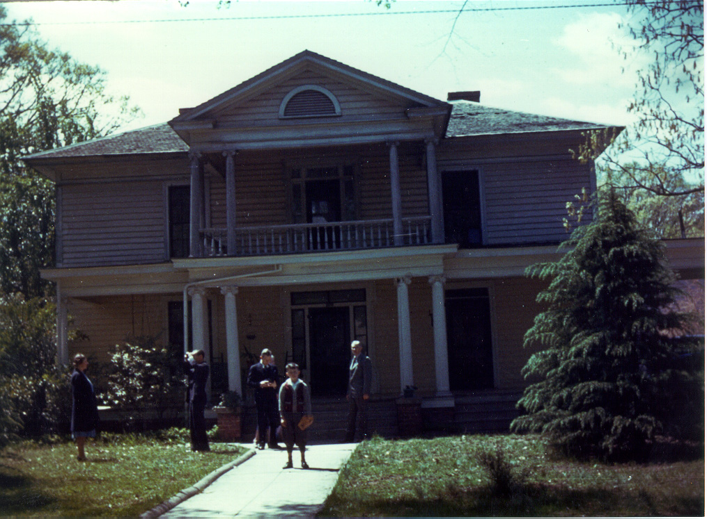

Here's a color photograph of William John RUDGE's house on Washington Street in Monroe, NC. To the left is Frances nee Rudge Kenney, being photographed by her husband, Stephen Etheridge Kenney. To his right is William Jerome Rudge Jr., who is standing in front of his mother, Ethel Josephine nee Adams Rudge. To his right and in the foreground is Steven Rudge Kenney. And to his right is William John Rudge.
Last updated on 12 Nov 1999